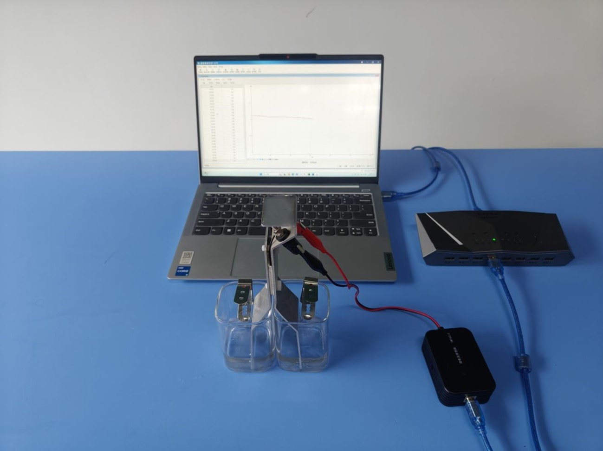
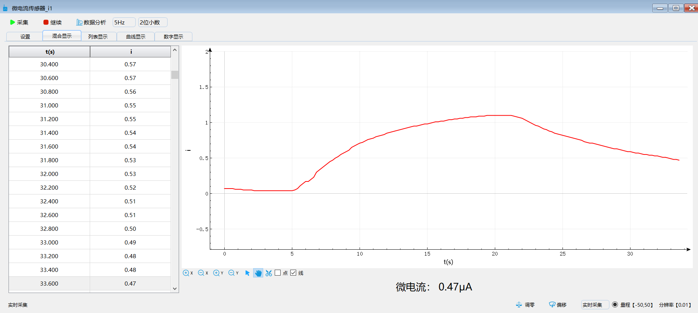

实验二十七 半导体温差发电片的特性研究
【实验目的】
探究温差发电实验。
【实验原理】
某些材料在温度差异作用下能够产生电压，即电动势。这种现象被称为“塞贝克效应”；温差发电指的是指利用不同温度下的热电材料之间的温差，将其转化为电能（形成电势差）的过程，从而定向移动产生电流。
【实验器材】
数据采集器、微电流传感器、温差发电实验器、冷水和热水、计算机等。
【实验装置】

【实验操作步骤】
1.将微电流传感器与温差电流实验器连接；
2.打开实验数据分析软件，将数据采集器连接电脑然后接入微电流传感器，待软件识别传感器后调整采集频率为10Hz，选择曲线的显示方式；
3.两个烧杯中一个加入冷水另一个加入热水，实验一段时间，点击“暂停”。即可得到实验数据曲线；
4.观察实验数据曲线分析可得一开始两个烧杯的液体之间温差大，产生较大的电动势，电流增大。随着时间的流逝，热水温度逐渐变小，温差变小，电动势随之变小，电流减少。

实验数据曲线
【思考与讨论】
温差发电在我们生活中有哪些应用呢？